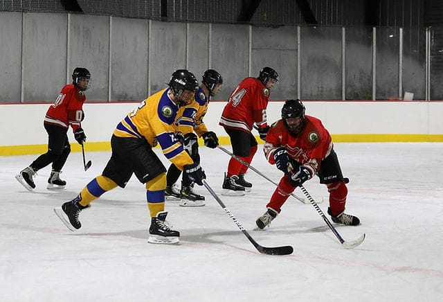

History of Ice Hockey
Ice hockey originated in Canada in the 19th century, drawing from various stick-and-ball games played on ice. The first organized indoor game was played in Montreal in 1875.
The National Hockey League (NHL) was established in 1917, helping the sport grow into one of the most exciting and physical games worldwide, especially in North America and Northern Europe.
Basic Rules of Ice Hockey
- Played between two teams of six players (including a goalie)
- Objective: score goals by hitting a puck into the opposing team’s net
- Games consist of three 20-minute periods
- Played on an ice rink with barriers
- Includes body checking, high-speed skating, and quick reflexes
Famous Ice Hockey Tournaments
- National Hockey League (NHL)
- Winter Olympic Games (Men’s and Women’s)
- IIHF Ice Hockey World Championship
- Stanley Cup Finals
- World Junior Championship
Legendary Ice Hockey Players
- Wayne Gretzky (Canada)
- Mario Lemieux (Canada)
- Sidney Crosby (Canada)
- Alexander Ovechkin (Russia)
- Hayley Wickenheiser (Canada – Women)
Health Benefits of Playing Ice Hockey
- Improves cardiovascular endurance and stamina
- Boosts balance, agility, and hand-eye coordination
- Builds muscle strength and flexibility
- Encourages team cooperation and communication
- Great for stress relief and mental focus
Global Popularity of Ice Hockey
Ice hockey is most popular in Canada, the USA, Russia, Sweden, and Finland. With passionate fans, intense rivalries, and fast-paced action, it continues to grow in popularity across Asia and Europe too.